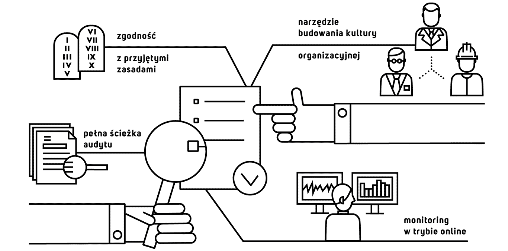

Większość firm posiada opracowane własne zasady odbywania podróży służbowych i ponoszenia wydatków. Najczęściej jednak brakuje właściwych narzędzi do egzekwowania ustalonych reguł. Nasz system zapewnia monitorowanie zgodności działań pracownika z obowiązującymi zasadami - wszystko to odbywa się w trybie online. Stworzone przez nas rozwiązanie wyposażone jest w funkcjonalności o charakterze prewencyjnym i detekcyjnymi w żaden sposób nie blokuje działalności firmy.
Ponieważ, głównym celem narzędzia jest zapewnienie naszym klientom przejrzystości skupiliśmy się na efektywnym zarządzaniu zgodnością z przyjętymi zasadami. Zapewniliśmy to poprzez zastosowanie:
